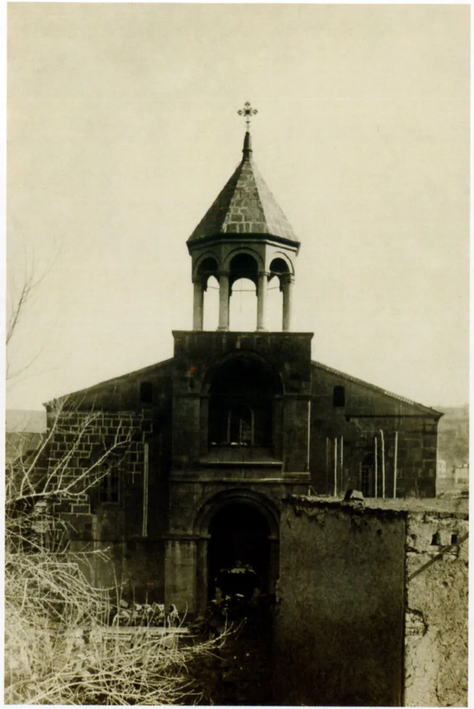
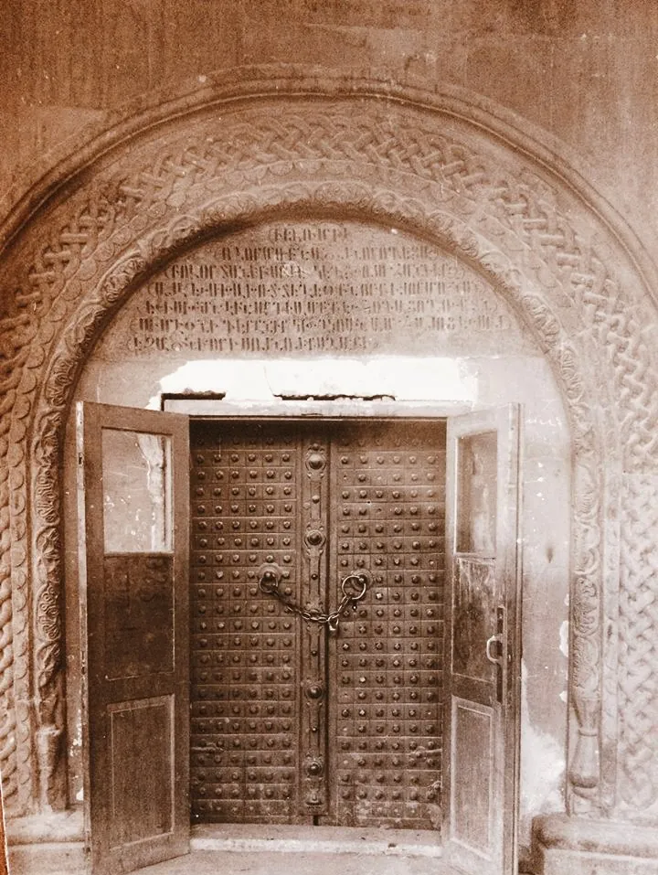
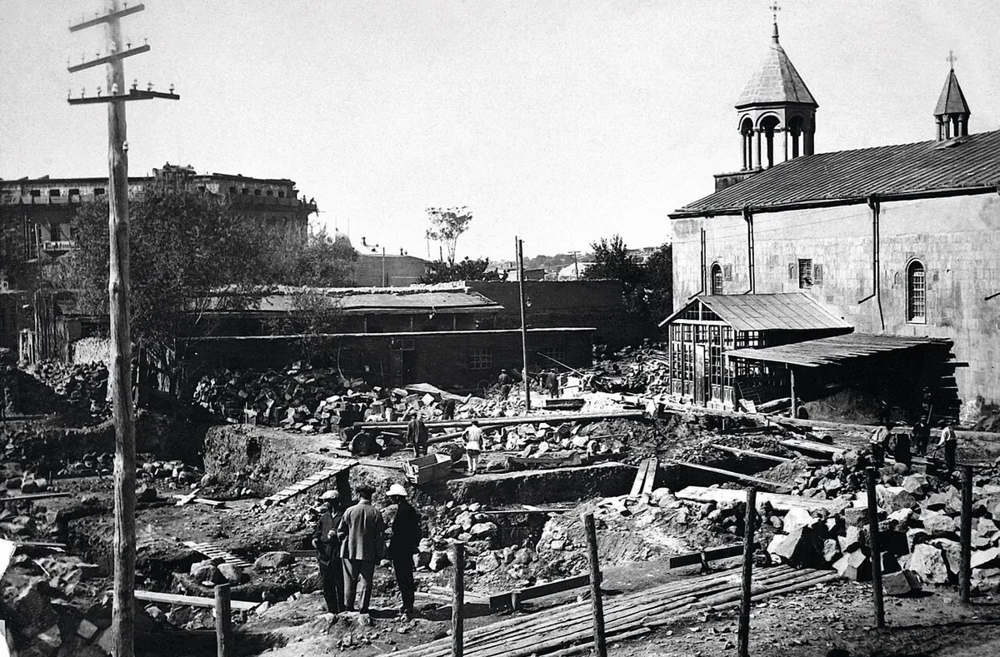
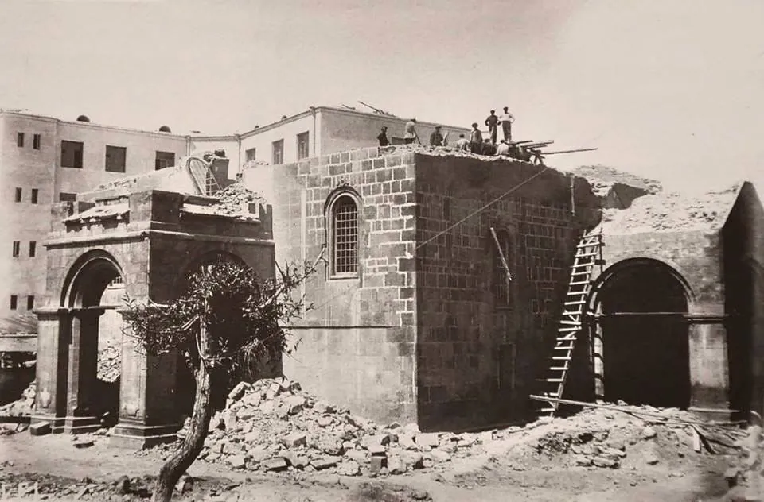
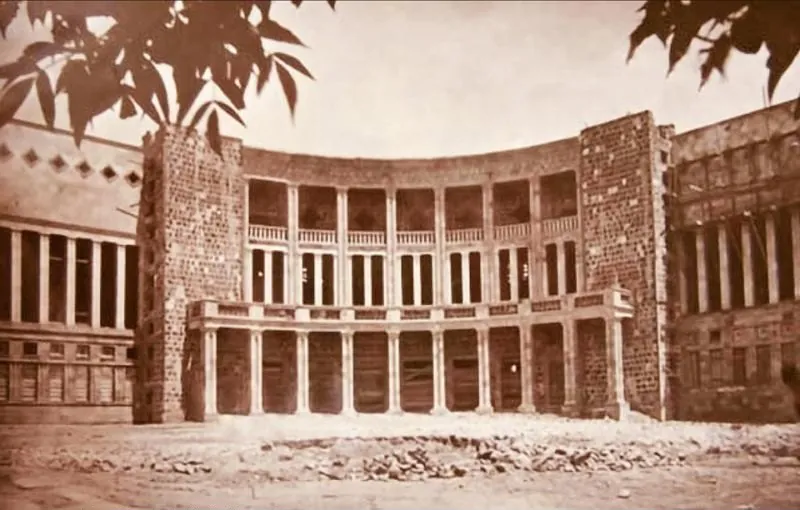

ԱլբոմАльбомAlbumՑուցանմուշ № 003Экспонат № 003Exhibit No. 003
Ցուցանմուշ № 003Экспонат № 003Exhibit No. 003
հինգ գլուխпять главfive chapters
Պողոս-Պետրոս եկեղեցու պատմությունըИстория церкви Погос-ПетросThe Story of Poghos-Petros Church
Ինչպես առաջացավ հին Երևանի ամենահին եկեղեցին, ինչպես այն քանդվեց և ինչ կա նրա տեղում։Как возникла старейшая церковь старого Еревана, как её снесли и что стоит на её месте.How the oldest church of old Yerevan came to be, how it was torn down, and what stands in its place.
ԳլուխГлаваChapter 01
Երևանի ամենահին եկեղեցինСтарейшая церковь ЕреванаThe oldest church of Yerevan

Պողոս-Պետրոս եկեղեցին գտնվում էր Շահար հին թաղամասում՝ այժմյան Աբովյան և Թումանյան փողոցների անկյունում։ Կ. Ղաֆադարյանը այն համարել է հին Երևանի ամենահին և ամենամեծ եկեղեցին. հիմնադրումը վերագրվում է V–VI դարերին, թեև տարբեր աղբյուրներում նշվում են նաև V դարը և VI–VII դարերը։ Դա անգմբեթ բազիլիկ էր երկթեք տանիքով. XIX դարում քարե ծածկը պատել են թիթեղով։ Մուտքերը հարավից, արևմուտքից և հյուսիսից էին. հետագայում հյուսիսայինին կցել են կամարակապ նախասրահ, իսկ արևմտյանին՝ սյունազարդ ռոտոնդայով եռայարուս զանգակատուն, որը ոճով չէր համապատասխանում բազիլիկին։
Церковь Погос-Петрос стояла в старом квартале Шаар, на углу нынешних улиц Абовяна и Туманяна. По оценке К. Гафадаряна, это была старейшая и крупнейшая церковь старого Еревана; основание относят к V–VI векам, хотя в разных источниках называют и V век, и VI–VII века. Это была бескупольная базилика с двускатной крышей: в XIX веке каменную кровлю перекрыли жестью. Входы были с юга, запада и севера; позже к северному пристроили арочный притвор, а к западному — трёхъярусную колокольню с ротондой на колоннах, по стилю не совсем подходившую к самой базилике.
The church stood in the old Shahar quarter, at the corner of today’s Abovyan and Tumanyan streets. K. Ghafadaryan called it the oldest and largest church of old Yerevan; its founding is dated to the 5th–6th centuries, though some sources give the 5th century or the 6th–7th. It was a domeless basilica with a gable roof; in the 19th century its stone roof was covered with tin. There were entrances on the south, west and north; later an arched porch was added to the north one, and to the west one a three-tier belfry with a columned rotunda, in a style that did not quite match the basilica itself.
ԳլուխГлаваChapter 02
Երկրաշարժը և նորոգումներըЗемлетрясение и ремонтыThe earthquake and the repairs

1679 թվականի երկրաշարժը ավերել է եկեղեցին, և XVII դարի վերջին այն վերակառուցել են պահպանված արևելյան մասի վրա. պատերում ագուցված խաչքարերին փորագրված են 1691 և 1692 թվականները։ Արձանագրությունները պատմում են 1778 և 1820 թվականների նորոգումների մասին. 1820-ին եկեղեցին նորոգել են ծխականների միջոցներով, ինչն այն ժամանակ հազվադեպ էր։ Երևանի պատմության թանգարանը հիշատակում է նաև 1811 և 1893 թվականների նորոգումները։ 1831-ին խորանի կողքին կառուցել են Սուրբ Ստեփանոս և Սուրբ Հովհաննես Մկրտիչ մատուռները, իսկ 1835-ին տեր Վարդանը Հին Բայազետի բերդից գնել է երկփեղկ երկաթե դուռ և նվիրել եկեղեցուն. այն հարավային բացվածքում կանգնել է առանց վերափոխման։
Землетрясение 1679 года разрушило церковь, и в конце XVII века её отстроили заново на уцелевшей восточной части: на хачкарах в стенах высечены даты 1691 и 1692. Надписи рассказывают о ремонтах 1778 и 1820 годов; в 1820-м церковь чинили «на средства благословенного народа этой церкви» — то есть на деньги прихожан, что по тем временам было редкостью. Музей истории Еревана называет и другие ремонты — 1811 и 1893 годов. В 1831 году у алтаря построили два придела — Св. Степаноса и Иоанна Крестителя, а в 1835-м тер Вардан купил в крепости Старый Баязет двустворчатую железную дверь и подарил её церкви: она встала в южный проём без переделок.
The 1679 earthquake ruined the church, and in the late 17th century it was rebuilt on the surviving east part; khachkars in the walls bear the dates 1691 and 1692. Inscriptions record repairs in 1778 and 1820; the 1820 work was paid for by the parishioners — “from the means of the blessed people of this church” — which was rare at the time. The History Museum of Yerevan also mentions repairs in 1811 and 1893. In 1831 two chapels, of St Stepanos and St John the Baptist, were built beside the altar, and in 1835 Ter Vardan bought a double iron door from the Old Bayazet fortress and gave it to the church; it fit the south doorway without alteration.
ԳլուխГлаваChapter 03
Քանդումից առաջПеред сносомBefore the demolition

Եկեղեցու մոտ կար Զալխանի (Շահարի) մզկիթը. նրա մինարեթը և եկեղեցու զանգակատունը երևում են 1923 թվականի նույն լուսանկարում, որ արել է Իտալական աշխարհագրական ընկերության արշավախումբը։ 1920-ականների վերջին եկեղեցու շուրջը շինարարություն էր ընթանում՝ դա երևում է 1929 թվականի լուսանկարում։ 1930 թվականի մարտի 2-ին Ալեքսանդր Թամանյանը գրեց, որ հուշարձանը շատ կարևոր է և պետք է պահպանել. քանդմանը դեմ էր նաև Գ. Չիրիկովը։ Քանդելուց առաջ շենքը չափագրել և փաստագրել են։
Рядом с церковью стояла мечеть Залхан (Шаарская): её минарет и колокольня церкви попали на один снимок 1923 года, сделанный экспедицией Итальянского географического общества. В конце 1920-х вокруг церкви шла стройка — она видна на снимке 1929 года. 2 марта 1930 года Александр Таманян написал, что памятник очень значим и его надо сохранить; против сноса выступал и Г. Чириков. Перед сносом здание обмерили и задокументировали.
Next to the church stood the Zalkhan (Shahar) mosque: its minaret and the church belfry appear in one 1923 photograph taken by an expedition of the Italian Geographical Society. In the late 1920s there was construction around the church — it shows in a 1929 photograph. On 2 March 1930 Alexander Tamanyan wrote that the monument was very significant and had to be saved; G. Chirikov opposed the demolition too. Before it was torn down, the building was measured and documented.
ԳլուխГлаваChapter 04
Քանդումը և որմնանկարներըСнос и фрескиDemolition and the frescoes

Եկեղեցին քանդվել է 1930–1931 թվականներին. այսպես է թվագրում Երևանի պատմության թանգարանը, իսկ այլ աղբյուրներում նշվում են 1930 թվականի նոյեմբերը կամ 1931-ը։ Խորանը քանդելիս հայտնաբերվել է տարբեր դարերի որմնանկարների վեց շերտ։ Քանդումը դադարեցրել են, կազմել են հանձնաժողով, իսկ կիևցի վերականգնող Բ. Յուկինը պատերից հանել է 14,25 մ² որմնանկար։ Ստորին շերտը բուսական զարդանախշ է, մյուս շերտերում՝ Պետրոս և Պողոս առաքյալները։ 1931-ին այդ որմնանկարների մասին զեկուցել են Բեռլինում։ Այսօր դրանք պահվում են Հայաստանի ազգային պատկերասրահում և Հայաստանի պատմության թանգարանում, իսկ Երևանի պատմության թանգարանի տվյալներով՝ նաև այնտեղ։
Церковь снесли в 1930–1931 годах — так датирует снос Музей истории Еревана; в других источниках называют ноябрь 1930 года или 1931 год. При разборке алтаря нашли шесть слоёв росписи разных веков. Снос приостановили и собрали комиссию, а киевский реставратор Б. Юкин снял со стен 14,25 м² фресок. Нижний слой — растительный орнамент, в других слоях — апостолы Пётр и Павел. О находке в 1931 году делали доклад в Берлине. Сегодня фрески хранятся в Национальной галерее и Историческом музее Армении, а по данным Музея истории Еревана — и в нём.
The church was torn down in 1930–1931 — that is the History Museum of Yerevan’s dating; other sources give November 1930 or 1931. Dismantling the altar revealed six layers of paintings from different centuries. The demolition was paused and a commission was convened, and the Kyiv restorer B. Yukin removed 14.25 m² of frescoes from the walls. The lowest layer is a plant ornament; the other layers show the apostles Peter and Paul. In 1931 a report on the find was given in Berlin. Today the frescoes are kept in the National Gallery and the History Museum of Armenia — and, according to the History Museum of Yerevan, there too.
ԳլուխГлаваChapter 05
Եկեղեցու տեղումНа месте церквиWhere the church stood

Եկեղեցու տեղում կառուցվել է «Մոսկվա» կինոթատրոնը՝ ճարտարապետներ Տ. Երկանյանի և Գ. Քոչարի նախագծով. այն բացվել է 1936 թվականի դեկտեմբերի 12-ին «Պեպո» ֆիլմով։ 2010 թվականին կառավարությունը որոշեց «Մոսկվա» կինոթատրոնի բացօթյա դահլիճի տարածքը տալ Էջմիածնին՝ հին եկեղեցու տեղում նորը կառուցելու համար։ Բողոքի ակցիան հավաքեց մոտ 18 000 ստորագրություն, մշակույթի 60-ից ավելի գործիչներ նամակ ստորագրեցին, և ծրագիրը չեղարկվեց։
На месте церкви построили кинотеатр «Москва» архитекторов Т. Ерканяна и Г. Кочара; его открыли 12 декабря 1936 года фильмом «Пэпо». В 2010 году правительство решило отдать землю открытого зала «Москвы» Эчмиадзину под новую церковь на месте старой. Протест собрал около 18 000 подписей, письмо подписали более 60 деятелей культуры; план отменили.
The Moscow Cinema, by the architects T. Yerkanyan and G. Kochar, was built on the church’s site; it opened on 12 December 1936 with the film “Pepo”. In 2010 the government decided to give the cinema’s open-air hall to Etchmiadzin for a new church on the site of the old one. A protest gathered about 18,000 signatures and a letter from more than 60 cultural figures, and the plan was dropped.
ԿատալոգКаталогCatalogue
ԱղբյուրներИсточникиSources
Փաստերը վերապատմված են սեփական բառերով՝ առանց հոդվածների տեքստը կրկնօրինակելու։Факты пересказаны своими словами, без копирования текста статей.Facts are retold in original wording, without copying the text of the articles.- en.wikipedia.org — «Saints Peter and Paul Church, Yerevan»
- hy.wikipedia.org — «Սուրբ Պողոս-Պետրոս եկեղեցի (Երևան)»
- ru.wikipedia.org — «Церковь Святых Павла и Петра (Ереван)»
- yhm.am — Музей истории Еревана (Yerevan History Museum)
- en.wikipedia.org — «Moscow Cinema»
- pastvu.com — архивные фото церкви (PastVu)
- commons.wikimedia.org — Saints Peter and Paul Church, Yerevan
- К. Гафадарян, «Ереван. Средневековые памятники и надписи», 1975, с. 159–160 — надписи, по пересказу Википедии (сам текст не видели)